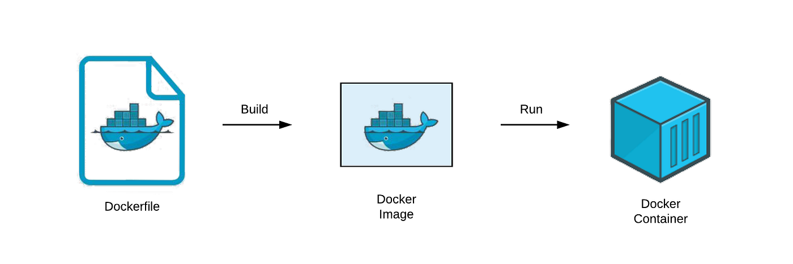

Docker
What is Docker?
### Set of different tools and services
Docker use cases
#### "Works on my machine!"
#### Busy developer - Participating in many projects - Every project has it's own dependencies
#### Docker is available for every popular OS: - Windows - macOS - Linux
#### So how Docker helps us? Docker's containerization and containers come to help.
#### Containers vs VMs - Containers' startup time is shorter - Containers perform faster - Containers are more lightweight
### Common Docker Terms/Objects ##### Dockerfile
##### Docker Image
##### Docker Container 
##### How to start Docker desktop is a friendly and easy way in!
Thank you for your time and attention!